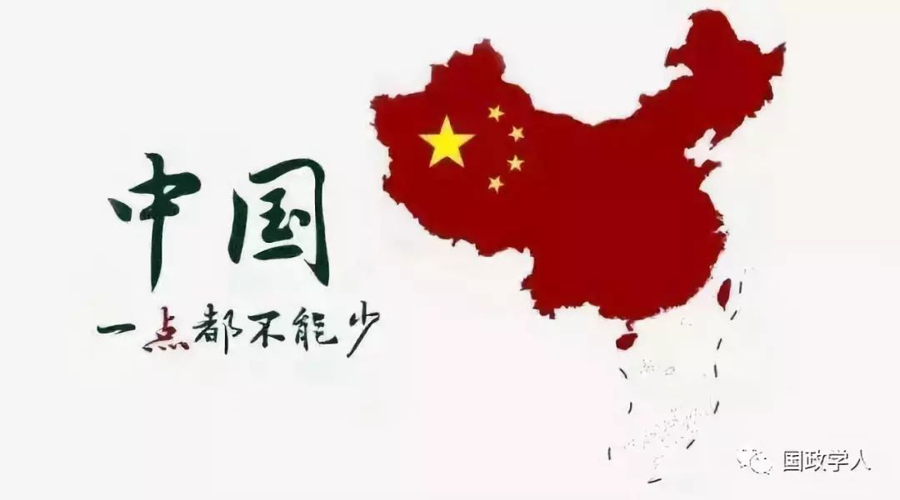

收录于合集

简 介
【 作者 】
陈沛超 ，男，两岸关系和平发展协同创新中心、厦门大学台湾研究院博士研究生; 孙云 ，男，两岸关系和平发展协同创新中心重大理论平台执行长，厦门大学台湾研究中心、台湾研究院教授; 温良谦 ，男，两岸关系和平发展协同创新中心、厦门大学台湾研究院硕士研究生。
【 来源 】
《台湾研究集刊》2018年第4期(总第158期)
【 整理 】
袁浩延
【 审核 】
高嘉琳 庞林立
【 提纲 】
从“亚太”到“印太”———美国亚洲地缘新战略
“印太战略”下的对华战略“再定位”
台湾在美国“印太战略”下的策略选择
台湾“借势”策略的收益前景分析
结语

摘要
特朗普上台以来，美国对亚洲的政策发生了改变，不再沿用奥巴马政府“亚太再平衡战略”，而是大力推行“印太战略”。特朗普政府的新版《国家安全战略报告》认为:美国过去40多年的“接触”政策并没有达到改变中国的预期效果，反而增强了中国挑战美国的实力，中国正从意识形态、政治、经济、军事等方面挑战着美国的全球利益。中国的战略定位发生了变化，报告把中国定义为美国的“战略竞争对手”，是一个“修正主义”大国。台湾蔡英文当局从当前中美“竞争对抗”的关系中看到了“借美抗陆”的可能性。在台湾“借势”策略框架中，蔡英文当局为施动者，针对目标为中国大陆，借势对象为美国，收益目标包括台湾安全、发展和加强与美“实质性”关系。不过，台湾的“借势”策略因其自身实力和外部条件的制约，加上复杂的收益，大致可以分为正向收益、不确定性收益和负向收益。
关键词： 特朗普；印太；台湾；借势
正 文
特朗普入主白宫后，中美两国的战略竞争博弈日趋加剧，其上台后力推的“印太战略”，被认为是一个更广阔的以中国为假想敌的军政联盟，亦即是以美国、日本、印度与澳大利亚四个主要成员，在两大洋之间架构的一道菱形安全屏障。而作为扼住中国进入太平洋咽喉的台湾岛，其战略地位的重要性不言而喻。众所周知，作为强势的一方，美台关系发展的主动权在美国，而美国的台海政策，又受到美国总体对华大战略的掣肘。台湾问题既是中美关系中最重要、最敏感的核心问题，也是事关中美关系和平稳定发展的政治基础。而美国政府不同的对华战略定位，首当其冲就是对台湾的影响。特朗普政府新版《国家安全战略报告》和《国防战略报告》的出台，标志着特朗普抛弃了美国政府传统的对华“接触”政策;而美国对中国“战略竞争对手”的定位，让蔡英文当局看到了台湾地区在新形势下“借势”“选边站”的希望和契机。
一、从“亚太”到“印太”———美国亚洲地缘新战略
2011年底，奥巴马政府提出“枢纽(pivot)”亦或是“转向亚洲”“重返亚太”战略，不久之后，更名为“再平衡”战略。“再平衡”一词相较于前者，更能体现出亚太地缘格局的转变和美国的战略意图。但经过奥巴马第一任期内再平衡战略的实施和第二任期的调整，美国亚太再平衡战略颓势尽显。此时恰逢印度在印度洋地区的崛起和“印太”概念的出现，这无疑让陷入颓势的亚太再平衡战略找到了新的突破口。奥巴马时期，“印太”一词虽时常被政府官员提及，但更多的是对亚太再平衡政策的补充说明，并没有明确阐明“印太战略”。特朗普政府上台后，很快借用了这个概念，并正式纳入官方话语，赋予了其新的战略含义。
2017年10月18日，时任美国国务卿蒂勒森在访问印度前夕，在美国战略与国际问题研究中心(CSIS)发表《确定下一个世纪我们与印度的关系》的讲话。在演讲中，蒂勒森舍弃传统的亚太地缘概念，而改用印太来指谓美国从西太平洋到印度洋的广阔的地缘政治区域。蒂勒森反复强调了美印坚定维护基于规则的秩序，且要在印度－太平洋地区建立强大的合作关系，以及维持印太地区自由和开放，以促进更大的繁荣和安全。印太———包括整个印度洋、西太平洋及其周边国家———将是21世纪全球举足轻重的地区，并且透露了未来以美国、印度、日本、澳大利亚四国为首来组建地区安全架构的设想。蒂勒森此次用印太取代亚太，将“西太平洋和印度洋视为一个战略弧”，代表了美国新政府在亚洲地区的地缘战略思维发生了改变。
2017年11月5日，特朗普开始了上任以来的首次亚洲之行，抵达日本横田美国空军基地之后，特朗普立即发表演说提及美国的亚太政策框架:“此行，我们将寻求新的伙伴以及与盟友之间的合作机会，力争建立一个本着自由、公正与互惠的印度－太平洋地区。”这是特朗普首次公开提及印太。在之后的会谈中，美日两国再次确认将展开符合国际法的航行及其他行动，强调了作为世界活力中心的“自由与开放”的印太地区的重要性。在接下来的行程中，印太成了特朗普演讲中最重要的关键词。在越南岘港会见APEC工商界领导人时，特朗普重点阐述了自由开放的“印太梦”:一是美国愿意与印太地区国家加强友谊与商务的联系，在公平、互惠基础上与印太国家缔结双边贸易协定，而不会去签订牺牲主权、且看上去美好但实际意义不大的大型协定;二是消除贸易不平衡，在公正、平等的基础上竞争，保护知识产权和WTO规则，建立公正和平等的贸易关系，而不是倾销产品，实行操纵通货和掠夺性的产业政策;三是强调对规则、原则的维护，尊重法治、个人权利、海上自由航行以及航空的权利，与有共同理想的国家建立稳定、信任的伙伴关系，而不会追求强权和恩赐，勇敢面对对安全、主权与稳定的威胁，共同维护这一地区的繁荣和安全。华盛顿智库“新美国安全中心”亚太安全项目高级主任帕特里克·M．克罗宁(Patrick M． Cronin)11月11日在《外交官》杂志撰文指出，特朗普的亚洲五国之行标志着美国“后转向亚洲”战略的开始。通过高峰论坛和演讲，特朗普阐述了美国政府新的整体性的亚洲政策，表达了对美国国家利益至关重要的、充满活力的印太地区维持和平与繁荣的宏大愿景。 特朗普勾勒的 “印太梦”，清楚地表明其旨在替代习近平主席所提倡的“中国梦”和“一带一路”倡议。
2017年12月18日，美国白宫发布了特朗普任内第一份《国家安全战略报告》，其中提到:“美国必须调动意愿和能力以参与竞争，并防止印太、欧洲和中东的不利变化。对盟国和伙伴做出坚定的承诺，并进行密切合作来保持地区力量的平衡。”报告将印太摆在美国区域战略的优先位置，在“区域战略”下单列一节，分别从政治、经济、军事和安全三部分进行全面的阐述。“政治上，进一步加强对盟友和已建立伙伴关系的国家或地区的承诺，在互相尊重主权、公平互惠贸易以及遵守法律的基础上，扩展和深化新的伙伴关系;经济上，主要强调鼓励进行区域合作，加强区域内基础设施建设，和平解决贸易争端，推进双边贸易协定;在军事和安全上，强调继续在印太地区维持有足够威慑力的军事存在，加强与盟友及伙伴的军事关系，建立一个强大的防御网络。”2018年1月19日美国国防部公布了新版《国防战略报告》，提出要巩固印太同盟关系与伙伴关系，建设一个能慑止入侵、维护稳定并确保全球公域航行自由的安全网络，并且愿意与自由开放的印太地区国家一道营造繁荣与安全，运用双边和多边安全关系来维持自由、开放的国际体系。
从新一届美国政府对印太的表述可以看出，美国亚洲地缘新战略的转向主要是基于以下两点考虑:第一，美国逐渐将印太地区作为一个整体放入美国战略体系中进行思考。随着印太地区国家政治、经济实力的不断增强，相互间联系的日益紧密，印度洋和太平洋越来越成为一个地缘政治与地缘经济的整体，越来越有活力，印太地区在美国全球战略中的地位不断提高。第二，借力印太地区大国制衡中国的意图逐渐明显。随着中国在东南亚、南亚地区影响力的逐渐加强，美国越来越担心一个“咄咄逼人”的中国会挑战二战后美国在该地区建立的政治规则与安全秩序，甚至会取而代之。美国将印太整合为一个地缘战略空间，用以取代亚太，一是为了淡化中国在此一地区的角色分量，二是美国可以借助崛起的印度和传统盟友日本、澳大利亚来制衡日益上升的中国。为了防止中国主导区域秩序，在中美两国“全方位”竞争格局形成的背景下，特朗普政府开启了新一轮的对华政策评估，在“印太战略”下将其对华战略进行了“再定位”。
二、“印太战略”下的对华战略“再定位”
特朗普政府的“印太战略”，尽管在某种意义上抛弃了亚太再平衡战略，但其思路却是一致的，并未跳出美国传统的亚洲政策框架。“自由而开放的印太”从东部的轴点日本延伸到西部的印度，再到南部的澳大利亚，旨在更广阔的印太地区网罗更多的“民主力量”，在美国的主导下，建立一个强大的联盟，共同抑制中国崛起，以维护基于准则的国际秩序、普遍的自由主义价值，以及海上航行自由。由此可见，“转向亚洲”作为一个政策名词虽然已经结束，但其政策本身却并未结束。相较于亚太再平衡战略，美国“印太战略”的制华色彩更为浓厚。复旦大学美国研究中心主任吴心伯教授认为，“印太战略”出台，特朗普有可能把对华政策上升到更大的框架中。而在现在看来，这个“更大的框架”所建立的第一步，就是深刻检讨美国之前的对华政策，将对华战略进行“再定位”。
(一)美国对华政策的“再审视”
特朗普就任美国总统以来，美国对华战略方针正在偏离过去总体合作的轨道。几十年来，美国的传统对华政策植根于这样的信念，即支持中国崛起和融入战后国际秩序有助于实现中国的开放，使之成为国际机构的良性参与者和全球贸易可信赖的合作伙伴。当中国在2001年12月11日加入世界贸易组织时，大部分美国人认为，这会让中国朝着美国所希望的方向逐渐“自由化”，并且有利于亚洲的和平与稳定，同时让美国更加繁荣。但如今，特朗普政府认为，过去几十年美国企图通过接触政策将中国拉入国际经济体系促使其“自由化”的战略设计“失败了”。接触政策帮助中国逐渐发展壮大，但却并没有促使中国朝着美国希望的方向发生政治社会方面的变化，这是一个历史性错误。
与此同时，中国对自身道路、理论、制度、文化的自信，也让此前美国国内指望“转化”中国的力量日渐失语。不论是在南海的岛礁建设、东海钓鱼岛争端，还是台湾问题上，中国政府的作为越来越主动。尤其是十九大以后所展现出的可能与“美国模式”相竞争的“中国模式”，让美国认为中国影响力的外扩对亚太地区的稳定与秩序构成了威胁。近年来，认为中国加入世贸组织能让美国更加繁荣，对中国加入世贸组织持乐观态度的声音，在美国国内逐渐销声匿迹。相反，对中美关系持悲观态度的人则越来越多，他们认为多年以来美国的中国政策混乱而不协调。忽视中国从其巨大的经济成就中获得的影响力、中美关系面临的不断增加的挑战，以及美国的大战略未能正确考虑这种关系，共同构成了一个影响深远的政策失败。同时， 他们认为中国领导人在面对美国不连续的政策时实行了一致性的大战略，这使得情况变得更加糟糕。
前几任政府对华战略的“失败”，让美国国内主张在安全和经贸等领域同时对华强硬、防范甚至围堵的声音随之高涨。特朗普政府在2017年12月发布的《国家安全战略报告》中，完全推翻了中美在多年互动中所形成的战略默契与战略妥协，明确界定了中国给美国所带来的威胁和挑战，重新审视美国的对华战略。
(二)由“负责任的利益攸关方”到“全面的战略竞争者”
自新世纪以来，美国政府共发布了5份《国家安全战略报告》，小布什政府2份(2002年、2006年)、奥巴马政府2份(2010年、2015年)以及特朗普政府1份(2017年)。不论是小布什政府“负责任的利益攸关方”，还是奥巴马政府“美国欢迎一个稳定、和平与繁荣的中国的崛起，且寻求与中国发展一种建设性关系”，其对华战略定位的总基调是强调共同且积极的合作关系。当然，其中也提到中美之间存在着矛盾和分歧，但均表示这不妨碍合作，“虽然会有竞争，但是我们认为不一定会发生对抗。我们将想方设法以降低因缺少互信与产生误判所造成的风险。”
实际上美国对华政策一直保持着接触与遏制两个面向。当美国国家利益认为需要中国的帮助之时，美国对华的战略定位为“负责任的利益攸关方”;而当美国认为中国对其国家利益构成挑战时，对华的战略定位为“战略竞争对手”。美国对华政策始终游离在这两个面向之中，力图实现接触与遏制的平衡。基于此，中美关系得以在波折中一直保持稳定的发展态势。美国前国务卿蒂勒森在阐释美国“自由而开放的印太战略”时，认为中国是对地区秩序、繁荣和西方利益的一个威胁。特朗普政府在《国家安全战略报告》、《国防战略报告》中，从国家安全和军事安全层面都将中国定性为“修正主义国家”，视中国为最大的“战略竞争者”。且基于所谓“有原则的现实主义”方针，特朗普政府耸人听闻地指出“一度称之为上个世纪现象的大国较量再度出现，中国和俄罗斯挑战美国的实力、影响和利益，企图侵蚀美国的安全和繁荣”。两份报告中对中美之间的竞争则定性为全面性的、战略性的。
在经济利益的竞争上，不点名指责中国在没有进行重大经济和政治改革的情况下，曲解和破坏关键经济制度，表面上支持自由贸易并从中获益，但实际上只会选择性地遵守自由贸易的规则和协议。且每年，像中国这样的竞争对手窃取了美国价值数千亿美元的知识产权。在地缘政治的竞争上，不仅将中国描述成与美国争夺全球与地区影响力的竞争者，还将这种竞争上升到秩序之争，认为“中国和俄罗斯开始重新主张他们的地区和国际影响力，他们在夺取我们的地缘政治优势，试图根据他们的利益改变国际秩序”。尤其强调在印太地区，“北京寻求在印太地区的霸权，试图在印太区域取代美国，以及在未来实现全球优势。中国以他有利的方式改写地区秩序，以牺牲他国主权为代价，扩张自己的权力。”在军事方面，指责中国正在建立世界上仅次于美国的实力最强大、资金最充裕的军事力量。美国认为中国发起了一场快速的军事现代化，目的在于限制美国介入印太地区;中国在南海建立军事基地，威胁了他国主权，破坏了地区稳定;并且指责中国的核武库不仅不断增长，而且呈现越来越多样化的趋势。
将中国视为美国的全面竞争对手和主要的战略关切，早已是美国战略界的共识，但特朗普政府抛弃了以往“选择性合作”“选择性竞争与威慑”的对华策略，以零和竞争思维来统筹未来的对华政策，释放出强硬的对华政策讯息。这可能也意味着，经过近几年的内部政策大讨论，美国朝野上下已经形成了新的对华政策共识，对华战略进行了“再定位”。
三、台湾在美国“印太战略”下的策略选择
蔡英文2016年5月20日上台以来，始终拒绝接受以“两岸同属一中”为核心意涵的“九二共识”，并在岛内积极推动各项“柔性台独”举措，导致两岸目前的“冷对抗”僵局难解。而为了舒缓来自大陆的强大压力，蔡英文当局唯有在对外政策方面利用中美之间的战略矛盾，寻找有利的空间，为其“台独”政策“保驾护航”。发展对美关系一直是蔡英文当局对外政策的主轴，自特朗普政府“印太战略”出台以来，蔡英文当局多次表态，积极响应，主动试图加入美国“印太战略”。进攻现实主义的“借势”策略主要是指利用有利于自己的国际环境，寻找队友，在“关键时刻”做出选择，打击敌对者和竞争者，以获取相关收益。就本文在这一部分所要探讨的台湾在美国“印太战略”下的策略选择而言，非常符合“借势”策略的特征。台湾作为台海博弈中力量相对弱小的一方，在“力抗”中国大陆压力的现实情境下，其政策选择只能“借”着美国的方向走，并希望美国给予军售的承诺及安全保障，从而发展“实质性”的美台关系。
(一)彰显台湾的“自由、民主价值”，维护基于规则的国际秩序
“自由”“民主”“规则秩序”，是美国“印太战略”的核心词汇，恰恰也是蔡英文当局自我标谤的最大优势，这成了美台之间的“共同话语”。2017年12月11日，蔡英文在会见美国在台协会(AIT)主席莫健(James Moriarty)时提到，台湾是“自由开放的印度－太平洋战略”中的相关者，愿意守护以法规为基础的国际秩序。这是蔡英文当局首次向美国表达愿意加入美国的印太地区战略。2018年2月21日，蔡英文会见美国参议院“台湾连线”主席殷霍夫(James Inhofe)及参众议员访问团，提及台美之间坚定的友谊以及“自由”与“人权”是彼此共同尊崇的价值等内容。2月27日，在参加“友邦”“驻台使节”晚宴上，蔡英文致辞时再次呼应美日的“印太战略”，强调台湾会和周边所有国家一起努力，携手保卫“自由开放”的共同成果，守护以法规为基础的国际秩序。台湾当局行政机构官员也屡次表态，如台当局“外交部北美司”司长陈立国表示，台对特朗普亚洲行所宣示的亚太倡议有“高度兴趣”，会持续向华盛顿了解未来这个倡议如何实施。在美国大的区域战略正在形成的过程中，“台湾当然不可能置身事外”。3月11日，在台湾智库举办的“印太战略下之台湾机会”国际论坛上，台湾当局“外交部”次长吴志中在致辞中表示，面对近来区域形势挑战，中国大陆频繁的军事扩张行动，台湾很高兴看到美、日共同推动印太愿景，以民主作为价值基础，保卫区域自由、开放的共同成果。为达成这个愿景，需要域内的“民主国家”承担更多责任，台湾也同样需扮演更积极的角色。4月10日，台当局“驻美代表”高硕泰在美国《华盛顿邮报》刊文表示，基于美国《与台湾关系法》以及美国历任行政部门对这项法律的坚定信守，台湾得以维持活跃且具活力的“民主”体制，台湾将继续与美国在印太地区并肩携手，宣扬这些核心价值。
(二)突出美台“伙伴关系”承诺，强调台湾的区域地位重要性，寄希望美国来维护地区安全
自蔡英文上台以来，大陆持续对台全面施压，人民解放军军机军舰定期绕台演训，蔡英文当局认为这对台湾地区安全构成了严峻挑战。美对台的安全承诺，成了台当局所要牢牢抓住的“救命稻草”。“印太战略”蕴含了制海权战略思维，台湾因所处的第一岛链特殊位置，凸显了其地缘重要性，而这也被蔡英文当局看作是台湾在地缘政治上的“资本”。2018年1月30日，蔡英文会见美国智库“传统基金会”创办人佛纳(Edwin J． Feulner Jr)，除了感谢佛纳及该基金会持续协助台美两方建立稳固的长期伙伴关系之外，着重强调了台湾在印太区域的战略重要性，表示区域的和平与稳定不只需要台湾的承诺，更需要来自所有利益关系者的承诺;同时也重申了美国支持台海维持现状以及确保台湾免于受到威胁的重要性。2月21日，蔡英文会见美国参议院“台湾连线”共同主席殷霍夫(James Inhofe)，对美国在区域稳定受到挑战的时候继续维持一个自由、开放的印太区域表示了赞赏，表示台湾将与美国一道，共同努力维护印太区域的和平与繁荣。3月1号，美国参议院无异议通过“与台湾交往法”之后，蔡英文通过推特表示，“与台湾交往法”象征了美国国会长久以来对台湾的支持，又指台美伙伴关系是印太地区和平稳定的重要支柱。3月27日，“与台湾交往法”的重要幕后推动者，美国联邦众议院外交委员会主席罗伊斯(Ｒoyce) 访问台湾，受到高规格接待。蔡英文在会见罗伊斯时再次重申台湾有能力也有意愿与美国在印太区域合作，也相信稳健的台美伙伴关系是印太区域和平、稳定及繁荣的重要基石，台湾愿意做出更多的贡献。
(三)强调美台合作，借“新南向政策”联结美国“印太战略”的企图凸显
蔡英文当局力推的“新南向政策”不仅是转移对大陆经贸依赖的重要举措，更是谋求与东南亚、南亚主要国家及地区建立战略联系，强化台湾经济及安全保障的“亚洲区域新战略”。特朗普的“印太战略”和蔡英文的“新南向”，都将印度和东南亚摆在了重要位置，被台湾媒体评论为小英与特朗普的“心灵契合”。蔡英文当局希望将“新南向政策”与“印太战略”对接，让台湾在美国“印太战略”中扮演重要角色。对于特朗普的“印太战略”，台当局所考虑的不仅仅是要加入，更重要的还是要与美合作。美国战略与国际问题研究中心(CSIS)在1月17日举行了《新南向政策:深化台湾的区域整合》报告发布会，台“政务委员”、前“驻美副代表”邓振中在发布会上透过视频发表演讲，将台当局“新南向”政策与美国“印太战略”放在同一个国际视野中进行探讨，强调该政策与美国“印太战略”相互契合，在战略愿景与经济发展计划上十分一致，并表示台湾愿意且有能力与美国在印太地区合作。无独有偶，台湾地区副领导人陈建仁在出席“台美日三边安全对话研讨会”时也指出，台湾支持特朗普在APEC 年会发表的“印太战略”，台当局正透过“新南向政策”重新定位台湾，以促进台湾与印太区域合作与经贸关系。2018年5月11日，台湾当局“外交部”也为呼应美国的“印太战略”，并配合推动“新南向政策”， 在 “亚太司”设立“印太科”，以“符合国际战略趋势作为”。台当局“外交部长”吴钊燮也在“立法院”接受质询时指出，面对印太新局，台湾除必须寻求与美国、日本、澳洲及印度等国家深化合作机会，也将透过“新南向政策”，深耕并开展与印太区域理念相近国家间的各项合作，使台湾在区域稳定与繁荣上持续扮演重要角色。另外蔡英文当局也一直试图利用“新南向政策”在印太地区深化与美日的利益联结，并加强与印度、澳大利亚的区域合作，积极寻求与其他国家发展共赢的机会。
四、台湾“借势”策略的收益前景分析
实施借势策略的收益主要来源于以下三个方面 :一是借势对象的承诺、资金、技术等;二是做出“关键选择”时，能够在冲突中击败敌对目标;三是获得国际秩序中的权力分配。对台湾当局来说，借势美国“印太战略”中意图获得的收益不外乎以下三个方面:一是获得美国对其安全的承诺以及对台军售;二是在中美“对抗”的情况下，坚定地站在美国一边，以期为“台独”创造空间;三是坚定地发展美台实质关系，借助美国提高自身国际地位，拓展“国际活动空间”。但台湾因其自身所处的地位和实力，并不具备主导两岸关系、美台关系的能力，台湾当局借势策略的收益更是受到中美关系发展大势的影响， 台湾当局摆脱不了其在中美关系中 “夹心饼”的角色，再加上美国“印太战略”的政策配套规划还未具体成型，台湾当局的借势选择充满了不确定性，对台海两岸关系的和平稳定发展，更是带来了严重的负面影响。
(一)正向收益
就地缘政治上来看，台湾所处的地缘位置无疑是美国“印太战略”不能忽视台湾的重要原因。一方面，台湾对美国来说具有重要的战略价值。台湾地区与亚洲的日本、菲律宾、马来西亚的地理位置成为包围中国大陆的第一岛链，台湾的战略价值对于中国大陆延伸海上权力来说无比重要。另一方面，美国“印太战略”将印度洋与太平洋尽纳囊中的制海权思维，将中国作为在西太平洋上的“战略竞争对手”。台湾地区作为一枚战略棋子，美国不仅不会减少对两岸事务的干涉，反而会变本加厉地以台湾问题为筹码，制衡迅速崛起的中国大陆。而对中国“战略竞争对手”的定位，让美国国内的亲台势力有了进一步发挥的空间，台湾当局借势主动加入美国的“印太战略”，后果必然是美台安全与军事关系，以及实质关系的进一步提升。对蔡英文当局而言，“与台湾交往法”的出台可看作借势策略正向收益的一种体现。
从安全上来看，台湾问题是测试美国是否有决心遏制中国军事威胁的试金石，如果美国防卫台湾失败，将会失信于亚洲盟国。特朗普政府《国家安全战略报告》明确了对台安全“承诺”:“我们将在坚持‘一个中国’的政策下，继续与台湾保持密切的联系，包括根据《与台湾关系法》所作的承诺，为台湾提供‘合法’防卫需要和威慑力量。”美国“印太战略”下的对华新军事围堵政策让台湾凭借自身优越的战略位置，在军事上进一步加强了与美军的合作。2017年12月12日，美国总统特朗普签署包括美台军舰互停、高阶军官互访及邀请台湾参加美军军演等内容的《2018财政年度国防授权法案》，使美国在原有的《与台湾关系法》基础上，进一步强化了美台之间在安全领域上的合作，赋予了美国与台湾地区进一步“实质性”建立“准军事同盟关系”的法律依据。
(二)不确定性收益
自身能力强弱是决定借势策略收益的根本性因素。台湾当局不具备主导中美关系的能力，只能随着中美之间的大势而沉浮。在中美关系下行的情况下，台湾当局借势策略能有一定的发挥空间，但若在中美关系上行向好之时，台湾当局难以摆脱其在中美关系大局中的边缘地位。美台关系一直处于“美主台从”格局，台湾的弱势地位，决定了其“命运”并不掌握在自己手中，美国完全主导了美台关系。
“印太战略”尚未形成具体完整的战略体系，特朗普政府虽有战略规划却没有具体的配套政策，是透过同盟框架还是签署双边政策协定的形式构建战略体系，还未有定数。尽管蔡英文当局急于表态加入和期待“做出贡献”，但美国是否会完全接纳台湾加入其“印太战略”并不确定。淡江大学国际事务与战略所所长李大中认为， 想让美国公开将台湾地区纳入 “印太战略”几乎不可能，因如此一来，中美关系就没有回旋余地。另外，特朗普的个人色彩也是一大变数，其特立独行的决策和行事风格不仅导致美国国内政治生态出现了重大变化，也为美国外交政策的制定和执行添加了空前的不确定性。同时，特朗普的国安团队大多是军人出身，立场偏向强硬，但国务院传统的美国建制派仍习惯于传统的美中关系架构，主张对华接触，认为 中美之间可以是竞争关系，但不能是对抗关系 ，双方在许多议题上立场不一。对华温和的蒂勒森的下台，强硬派蓬佩奥的上位，看似对华强硬派暂时占据优势，但未来能否全面主导美国的国安、经贸政策，还需要密切观察。就此而言，台湾在美“印太战略”下的借势选择，充满了不确定性。
(三)负向收益
从两岸历史交往的轨迹来看，台湾当局是否接受并坚持“两岸同属一个中国”这一核心原则，始终是两岸关系能否和平发展的关键。蔡英文上台执政以来，始终拒绝承认体现这一核心原则的“九二共识”;在对外政策上，始终坚持“联美抗陆”的政策。如今，蔡英文当局主动表态加入美国的“印太战略”，宣扬美台“价值同盟”关系，努力提升美台双方的安全合作关系与“半官方”交往层级，自恃可以依靠美方与中国大陆对抗，其目的是希望借此抵消中国大陆的促统压力，为其谋求“台湾独立”赢得时间。
对两岸关系而言，蔡英文当局向美“印太战略”所纳“投名状”，必然导致两岸关系更加恶化，增加大陆对蔡英文当局的不信任感，使两岸互信更加难以建立。国台办发言人安峰山对此更是以“挟洋自重，刷存在感”八个字严厉批评。蔡英文在就职两周年纪念日发表有关台湾在世界或区域格局中的“棋手”论述，强调台湾有实力、有资格扮演棋手和关键角色，更突显了她“挟美自重”的心态。针对美国国会通过的《2018财政年度国防授权法案》中要求美国政府评估“美台军舰互停”可能性的问题，中国驻美公使发出了“美国军舰抵达高雄之日，就是我解放军武力统一台湾之时”的严正警告，此被称为“新武统论”。为了震慑“台独”，中国大陆加强了对蔡英文当局的威慑力度，解放军军机、军舰多批次、多军种绕台联合训练已渐成“常态化”，以防止蔡英文铤而走险，在谋求“台独”的道路上越走越远。蔡英文当局“借美之手”全方位提升美台实质关系，不断冲撞大陆的反“台独”红线，导致两岸关系中的不确定因素和风险明显增加，两岸关系日趋复杂严峻，台海局势将更加紧张。
对台湾当局的对外关系而言，由于蔡英文拒不承认“九二共识”，两岸“外交休兵”结束，两岸在台湾“国际活动空间”问题上的较量烽烟再起。蔡英文当局任何借助于外国来增强自身安全和扩大其“国际参与”的举措，无异于缘木求鱼，难逃失败的下场。“与台湾交往法”的签署，为美台当局高层官员互访开绿灯，并埋下“特蔡会”伏笔，成为特朗普政府对付中国的大战略筹码。可以预见，大陆必定会加大对台湾当局的惩罚和遏制力度。蔡英文上台两年多来，圣多美和普林西比、巴拿马、多米尼加、布基纳法索四国与台湾当局“断交”。今后，无论是大陆与台湾的“邦交”之争，亦或是台湾参与国际刑警组织、世界卫生组织等国际组织，台湾当局的对外关系必将“日益艰困”，大陆将会进一步压缩台湾的“国际活动空间”，而且对美台关系的任何异动也将更为敏感，采取的反制措施也将更为强烈。台湾恐未能真正享受到“印太战略”所带来的收益，便会自食两岸关系进一步恶化的结果。两岸关系恐将陷入不断下降的恶性螺旋，“冷对抗”僵局难以纾解。
五、结 语
借势策略的一个特点是在策略实施过程中，会有一个关键的选择期。在台湾，主张“台独”的民进党领导人蔡英文上台，在美国，认为可以“交易”“一个中国”政策的特朗普总统上台，二者给两岸关系带来了巨大的不确定性，尤其是自特朗普上台执政以来，台海形势较之以往发生了比较大的波折。特朗普阵营中“亲台派”众多，且多是过去想改变美台关系框架的人物。在美国“印太战略”下，《国家安全战略报告》《国防战略报告》对中国“战略竞争对手”的定位，让美国国内主张不要自我设限、要主动发展对台关系的声浪高涨。“独派”与“亲台派”的汇流，有可能出现美台关系的大幅进展。蔡英文当局正是抓住了中美关系大势下行的“机遇期”，意图借势加入美国“印太战略”。
那么，在美国持续推进“印太战略”的背景下，我们要持续关注美台关系两个动向:一是美国对中国的战略“再定位”是不是会延伸出美国对台政策的“再定位”?二是特朗普政府发展对台关系的一系列举措，是将台湾作为“战略棋子”的虚张声势，还是作为提升美台实质性关系的势在必行?可以看到，首次纳入《2018财政年度国防授权法案》的“美台军舰互停”条款违反了中美建交公报中有关撤军的规定;“与台湾交往法”允许“美台各级官员互访”违反了中美建交公报中美国只与台湾保持“非官方关系”的承诺。虽然这两个法案中的某些条款，并没有强制性，重点在执行层面，但若在未来有军事或外交上的需要，美国军舰基于紧急情况临时停靠包括太平岛在内的台湾港口、岛屿，亦或是台湾地区领导人采取李登辉式的“曲式访美”，就将对中美关系以及台海的和平与稳定产生不可估量的严重影响。如果美国政府内部真出现对台政策框架的再讨论，美国对台政策是否会与中美之间的“三大公报”脱钩，以小动作不断蚕食中国政府在台湾问题上划定的红线，从而发展实质性的美台双边关系? 岛内“台独”分子是否会借势搞出一些走向“法理台独”的动作? 这都是未来中美关系和平发展过程中可能面临的重大障碍。
更多阅读
国政学人 （ID：guozhengxueren)
为方便学人及时阅读高质量文章
别忘把国政学人设置 星标 哦~